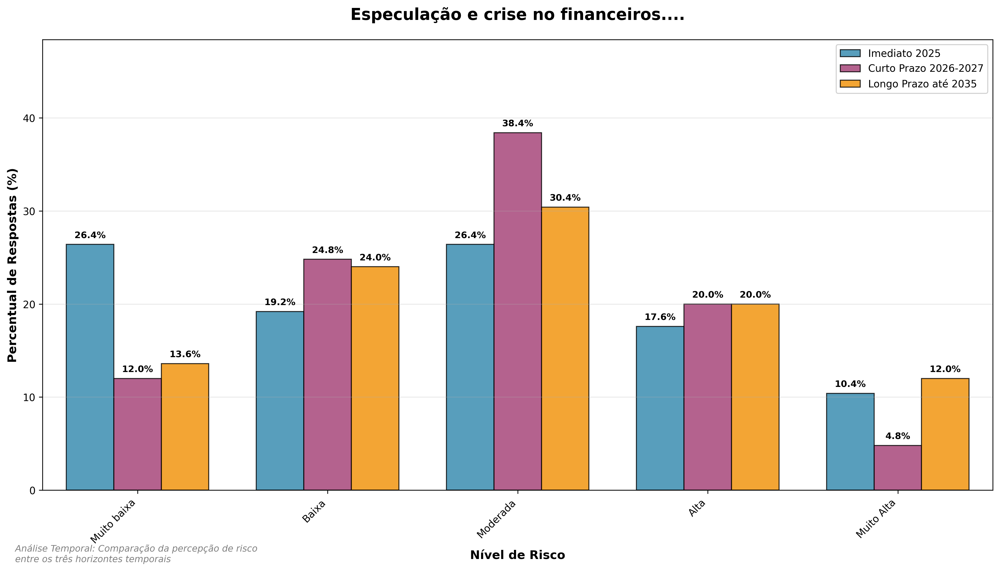
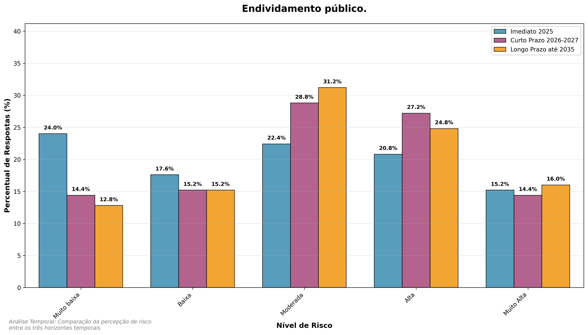
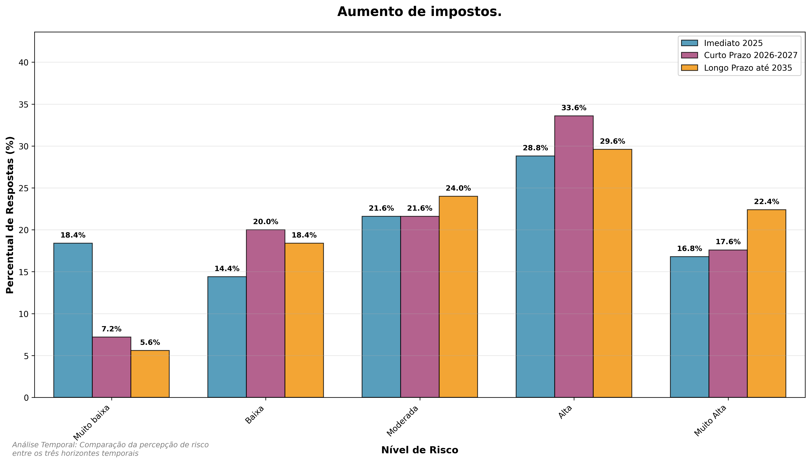

7 Análise de Riscos Econômicos
8 Análise de Riscos Econômicos
Este capítulo apresenta a análise dos riscos econômicos identificados organizados por horizontes temporais e aspectos específicos.
8.1 Visão Geral dos Riscos Econômicos
Os riscos econômicos foram avaliados em três horizontes temporais:
- Imediato (2025): Riscos que requerem atenção imediata
- Curto Prazo (2026-2027): Riscos emergentes que demandam planejamento
- Longo Prazo (até 2035): Riscos estratégicos que requerem visão de futuro
8.2 Panorama do Periodo Imediato

- 1.15 Instabilidade politica: 50,4% das respostas em niveis altos (4-5)
- 1.16 Excesso regulatorio: 46,4% em niveis altos
- 1.14 Aumento de impostos: 45,6% em niveis altos
8.3 Análise Temporal da Dimensão Econômica

A dimensão econômica apresenta 19 variáveis com médias superiores a 2.5 no curto prazo, demonstrando a preocupação significativa com fatores financeiros e de mercado. Os slopegraphs revelam as trajetórias individuais de cada risco econômico, permitindo identificar quais tendências apresentam maior ou menor resiliência temporal.
8.3.1 Insights da Análise Temporal Econômica
A análise temporal dos riscos econômicos revela padrões distintos em comparação com outras dimensões:
8.3.1.1 Estabilidade Relativa dos Riscos Econômicos
- Delta médio de -0,05: Única dimensão com melhoria média percebida
- 19 variáveis estáveis: A maioria dos riscos mantém-se constante entre períodos
- Ausência de volatilidade extrema: Mudanças limitadas a ±1.0 ponto na maioria dos casos
8.3.1.2 Padrões Específicos Identificados
- Riscos Crônicos Elevados: Instabilidade política, excesso regulatório e aumento de impostos mantêm-se persistentemente altos
- Melhoria Significativa: Falhas em infraestruturas críticas digitais apresenta melhoria de -1.0 ponto
- Estabilidade em Níveis Críticos: A maioria das variáveis mantém-se em mediana 3.0-4.0
8.3.1.3 Destaques da Evolução Temporal
- Risco Mais Crítico Persistente: Instabilidade política mantém-se como principal preocupação
- Pressão Regulatória Crescente: Excesso regulatório e aumento de impostos mostram tendência de elevação
- Resiliência Operacional: Riscos operacionais mostram maior capacidade de adaptação
8.3.1.4 Implicações Estratégicas para a Dimensão Econômica
A análise temporal econômica sugere:
1. Foco em Governança: Priorizar estabilidade política e ambiente regulatório previsível
2. Resiliência Digital: Fortalecer infraestruturas críticas como área de sucesso
3. Gestão de Custos: Monitorar pressões inflacionárias e tributárias
4. Diversificação: Reduzir dependência de mercados e clientes específicos
8.4 Análise por Variáveis
8.4.1 Instabilidade econômica global e crises financeiras

Imediato (2025): Mediana 3.0, 28.0% em risco alto
Curto Prazo (2026-2027): Mediana 3.0, 24.8% em risco alto
Longo Prazo (até 2035): Mediana 3.0, 32.0% em risco alto
- Tendência: Percepção de risco relativamente estável ao longo do tempo
1.1 Especulação e crise no mercado de ativos financeiros. [Imediato (2025)]
Essa percepção de risco é constante no mercado nacional e internacional de capitais pela volatilidade e facilidade de investimentos em ativos financeiros. A aversão a esse risco pode conduzir à atenção a investimentos mais estáveis e controláveis como títulos públicos e menos a títulos e papéis, eventualmente, com mais rentabilidade, mas mais incertos e frágeis, às ações especulativas de grandes investidores.
8.4.2 Concentração de recursos e controle de preços por agentes econômicos

Imediato (2025): Mediana 3.0, 22.4% em risco alto
Curto Prazo (2026-2027): Mediana 3.0, 33.6% em risco alto
Longo Prazo (até 2035): Mediana 3.0, 42.4% em risco alto
- Tendência: Percepção de risco relativamente estável ao longo do tempo
1.2 Concentração de recursos estrategicamente importantes (minerais, materiais, tecnologias) entre um pequeno número de indivíduos, empresas ou Estados que podem controlar o acesso e ditar preços discricionários. [Imediato (2025)]
Esta condição tem se acentuado com a concentração de propriedades e acesso a recursos materiais e tecnológicos, que se apresentam no mercado nacional e internacional. A estrutura concentradora desses mercados impacta na atividade portuária para lidar com agentes com poder de negociação e viabilização de parcerias em terminais dedicados.
8.4.3 Endividamento Público

Imediato (2025): Mediana 3.0, 36.0% em risco alto
Curto Prazo (2026-2027): Mediana 3.0, 41.6% em risco alto
Longo Prazo (até 2035): Mediana 3.0, 40.8% em risco alto
- Tendência: Percepção de risco relativamente estável ao longo do tempo
1.3 Endividamento público. [Imediato (2025)]
Risco devido a eventual impossibilidade ou dificuldade para aportes públicos ou garantias de empréstimos, principalmente com as altas taxas de juros que o país tem convivido.
8.4.4 Endividamento Empresarial

Imediato (2025): Mediana 3.0, 21.6% em risco alto
Curto Prazo (2026-2027): Mediana 3.0, 27.2% em risco alto
Longo Prazo (até 2035): Mediana 3.0, 32.0% em risco alto
- Tendência: Percepção de risco relativamente estável ao longo do tempo
1.4 Endividamento empresarial. [Imediato (2025)]
Risco recorrente que se agrava com as altas taxas de juros e fontes de financiamento de longo prazo praticamente restritas ao BNDES. Empréstimos de curto prazo se mostram caros e impactam os resultados das organizações.
8.4.5 Endividamento das pessoas

Imediato (2025): Mediana 2.0, 26.4% em risco alto
Curto Prazo (2026-2027): Mediana 3.0, 31.2% em risco alto
Longo Prazo (até 2035): Mediana 3.0, 30.4% em risco alto
- Tendência: Percepção de risco relativamente estável ao longo do tempo
1.5 Endividamento das pessoas.
Risco decorrente da exposição das pessoas às condições de tomada de recursos por demais exigentes e custosas. Políticas de recomposição de suas rendas podem aliviar essa situação endêmica para parte significante da população.
8.4.6 Falhas, interrupções ou disrupções em cadeias de suprimentos relevantes

Imediato (2025): Mediana 3.0, 40.0% em risco alto
Curto Prazo (2026-2027): Mediana 4.0, 50.4% em risco alto
Longo Prazo (até 2035): Mediana 3.0, 44.8% em risco alto
- Tendência: Pico de risco no curto prazo, retornando ao nível inicial
1.6 Falhas, interrupções ou disrupções em cadeias de suprimentos relevantes.
Riscos que podem advir de causas naturais e/ou de políticas restritivas ou mesmo impeditivas de operações comerciais como a praticada pelo atual governo estadunidense. Portos fazem parte de cadeias logísticas e têm de estar alerta para a evolução das cadeias produtivas de seus usuários e/ou parceiros.
8.4.7 Disrupções em infraestruturas críticas (físicas e digitais) ou serviços que sustentam sistemas críticos

Imediato (2025): Mediana 3.0, 44.8% em risco alto
Curto Prazo (2026-2027): Mediana 3.0, 43.2% em risco alto
Longo Prazo (até 2035): Mediana 3.0, 40.0% em risco alto
- Tendência: Percepção de risco relativamente estável ao longo do tempo
1.7 Disrupções em infraestruturas críticas (físicas e digitais) ou serviços que sustentam sistemas críticos (internet, telecomunicações, serviços públicos, sistemas financeiros ou energia).
Este risco é constante e, a exemplo do de falhas nas cadeias de suprimentos (Risco 1.6), exige acompanhamento que se estende para além do ambiente portuário, pois a evolução tecnológica digital tem sido intensa e disruptiva. Portos devem contar com áreas de acompanhamento e adaptação das inovações às suas operações. É crítico o seu impacto na geração e alocação de postos de trabalho e renda dos trabalhadores.
8.4.8 Diminuição (estagnação) do ritmo e da dinâmica das atividades econômicas

Imediato (2025): Mediana 3.0, 33.6% em risco alto
Curto Prazo (2026-2027): Mediana 3.0, 36.8% em risco alto
Longo Prazo (até 2035): Mediana 3.0, 44.0% em risco alto
- Tendência: Percepção de risco relativamente estável ao longo do tempo
1.8 Diminuição (estagnação) do ritmo e da dinâmica das atividades econômicas.
Este risco é mais uma consequência do que uma causa, pois ciclos econômicos e setoriais se repetem. Entende-se que diminuição do ritmo não corresponde a retração ou perda de atividades econômicas.
8.4.9 Ação do crime organizado e atividades ilícitas de empresas e pessoas

Imediato (2025): Mediana 3.0, 36.0% em risco alto
Curto Prazo (2026-2027): Mediana 3.0, 42.4% em risco alto
Longo Prazo (até 2035): Mediana 3.0, 44.8% em risco alto
- Tendência: Percepção de risco relativamente estável ao longo do tempo
1.9 Ação do crime organizado e atividades ilícitas de empresas e pessoas.
Risco crítico e permanente nas operações portuárias. Portos são portas de entrada e saída de materiais ilegais (drogas, armas e contrabandos). A vigilância deve ser constante e permanente com atuação de autoridades policiais, da Marinha e das Aduanas e das polícias portuárias.
8.4.10 Aumento da inflação

Imediato (2025): Mediana 3.0, 32.0% em risco alto
Curto Prazo (2026-2027): Mediana 3.0, 38.4% em risco alto
Longo Prazo (até 2035): Mediana 3.0, 43.2% em risco alto
- Tendência: Percepção de risco relativamente estável ao longo do tempo
1.10 Aumento da inflação. [Imediato (2025)]
Risco que depende da atuação das autoridades monetárias do país. Felizmente, ela tem sido controlada, um preço a se pagar pelas altas taxas de juros praticadas. Não obstante, pode-se ter aumentos fora da média para insumos importantes para as atividades portuárias. Controle e ações remediativas são imperativas.
8.4.11 Dificuldades de financiamento e obtenção de recursos financeiros para investimento

Imediato (2025): Mediana 3.0, 27.2% em risco alto
Curto Prazo (2026-2027): Mediana 3.0, 34.4% em risco alto
Longo Prazo (até 2035): Mediana 3.0, 39.2% em risco alto
- Tendência: Percepção de risco relativamente estável ao longo do tempo
1.11 Dificuldades de financiamento e obtenção de recursos financeiros para investimento. [Imediato (2025)]
O financiamento depende das condições de mercado, das condições do empreendimento a ser financiado e da organização que vai tomar o encargo financeiro. É condição natural da atividade que envolve volumes expressivos de recursos a movimentar.
8.4.12 Aumento de impostos

Imediato (2025): Mediana 3.0, 46.4% em risco alto
Curto Prazo (2026-2027): Mediana 4.0, 53.6% em risco alto
Longo Prazo (até 2035): Mediana 4.0, 52.8% em risco alto
- Tendência: Percepção de risco relativamente estável ao longo do tempo
1.14 Aumento de impostos.
Risco constante, assim como a morte. A condição de aumento de impostos tem de ser analisada em relação às condições de concorrência e à possibilidade de mercado de repassá-los a clientes e parceiros.
8.4.13 Instabilidade política

Imediato (2025): Mediana 3.0, 24.8% em risco alto
Curto Prazo (2026-2027): Mediana 3.0, 27.2% em risco alto
Longo Prazo (até 2035): Mediana 3.0, 33.6% em risco alto
- Tendência: Percepção de risco relativamente estável ao longo do tempo
1.15 Instabilidade política.
Risco maior que a atividade operacional. Tem a ver com a prática democrática e, no caso de portos públicos, eventuais trocas de administração por alternância de grupos políticos determinantes.
8.4.14 Excesso regulatório

Imediato (2025): Mediana 2.0, 22.4% em risco alto
Curto Prazo (2026-2027): Mediana 3.0, 27.2% em risco alto
Longo Prazo (até 2035): Mediana 3.0, 32.0% em risco alto
- Tendência: Percepção de risco relativamente estável ao longo do tempo
1.16 Excesso regulatório.
Risco que advém da condição intrínseca e natural dos portos de reserva de mercado e mesmo monopolista. A regulamentação é necessária, inclusive para manter as condições de operação legalmente apropriadas e preservar as condições de competição dos agentes intra e interportos.
8.4.15 Déficit regulatório

Imediato (2025): Mediana 3.0, 45.6% em risco alto
Curto Prazo (2026-2027): Mediana 3.0, 47.2% em risco alto
Longo Prazo (até 2035): Mediana 3.0, 48.0% em risco alto
- Tendência: Percepção de risco relativamente estável ao longo do tempo
1.17 Déficit regulatório.
Risco associado aos Riscos 1.6 e 1.7, ou seja, a evolução rápida de condições de mercado e, principalmente, da tecnologia pode levar à necessidade da adequação da regulamentação a novas situações e condicionantes.
8.4.16 Desemprego

Imediato (2025): Mediana 3.0, 30.4% em risco alto
Curto Prazo (2026-2027): Mediana 3.0, 36.0% em risco alto
Longo Prazo (até 2035): Mediana 3.0, 40.0% em risco alto
- Tendência: Percepção de risco relativamente estável ao longo do tempo
1.18 Desemprego
Risco associado à evolução das atividades. Portos são serviços de demanda derivada, ou seja, dependem do mercado dos produtos movimentados. Outro fator importante é a evolução tecnológica e digital com a eliminação de postos de trabalho, o que leva à necessidade de desenvolvimento permanente do pessoal ocupado e controle das condições de trabalho e contratação.
8.4.17 Corrupção

Imediato (2025): Mediana 3.0, 38.4% em risco alto
Curto Prazo (2026-2027): Mediana 3.0, 45.6% em risco alto
Longo Prazo (até 2035): Mediana 3.0, 37.6% em risco alto
- Tendência: Percepção de risco relativamente estável ao longo do tempo
1.19 Corrupção.
Risco associado ao Risco 1.9 e 1.12. As operações portuárias envolvem muitos recursos e etapas variadas de realização, estando vulneráveis a práticas inadequadas. Um controle rigoroso é necessário que se estende a todas as cadeias produtivas envolvidas na atividade portuária.
8.4.18 Desequilíbrio econômico regional

Imediato (2025): Mediana 3.0, 30.4% em risco alto
Curto Prazo (2026-2027): Mediana 3.0, 36.0% em risco alto
Longo Prazo (até 2035): Mediana 3.0, 40.0% em risco alto
- Tendência: Percepção de risco relativamente estável ao longo do tempo
1.20 Desequilíbrio econômico regional.
Risco decorrente da condição da operação portuária como de demanda derivada. Portos têm sua atividade decorrente da economia de sua hinterlândia, ou seja, sua área de atuação, ou as chamadas origens e destinos verdadeiros dos produtos movimentados.
8.4.19 Conflito ou instabilidade institucional do Estado

Imediato (2025): Mediana 3.0, 38.4% em risco alto
Curto Prazo (2026-2027): Mediana 3.0, 45.6% em risco alto
Longo Prazo (até 2035): Mediana 3.0, 37.6% em risco alto
- Tendência: Percepção de risco relativamente estável ao longo do tempo
1.21 Conflito ou instabilidade institucional do Estado. [Imediato (2025)]
Riscos relativos à inserção das operações portuárias como elementos das economias locais e regionais na dinâmica da relação com autoridades públicas. Esse risco, naturalmente, abarca portos públicos e terminais privados.
8.5 Análise Temporal Comparativa
A análise comparativa entre os horizontes temporais revela importantes padrões:
8.5.1 Tendências Identificadas
- Riscos Imediatos: Maior preocupação com instabilidade econômica global e interrupção de cadeias de suprimentos
- Riscos de Curto Prazo: Destaque para aumento de custos operacionais e redução da demanda
- Riscos de Longo Prazo: Preocupação crescente com perda de competitividade e redução de investimentos
8.5.2 Insights Estratégicos
- Resiliência Financeira: Necessidade de fortalecer o capital de giro e diversificar fontes de receita
- Gestão de Custos: Implementar programas de eficiência operacional e otimização logística
- Diversificação: Reduzir dependência de mercados e clientes específicos
- Inovação: Investir em tecnologias que aumentem a competitividade e reduzam custos